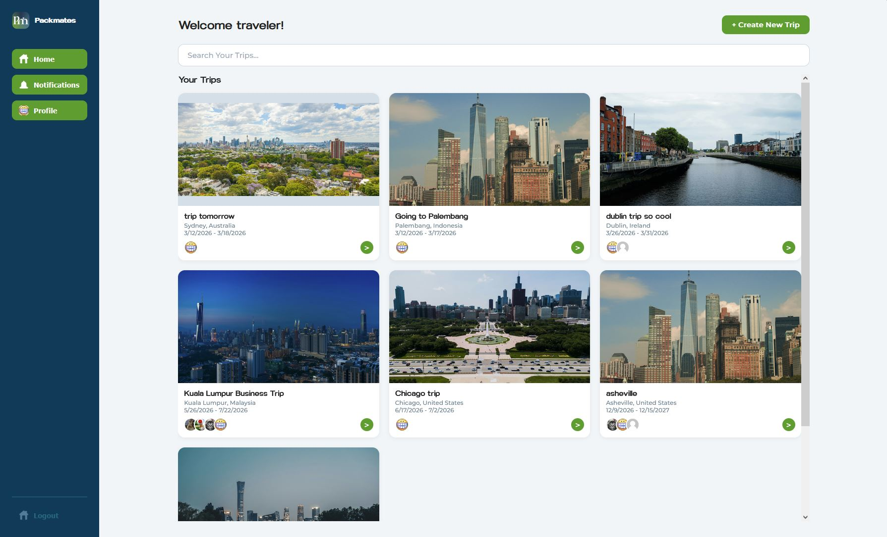
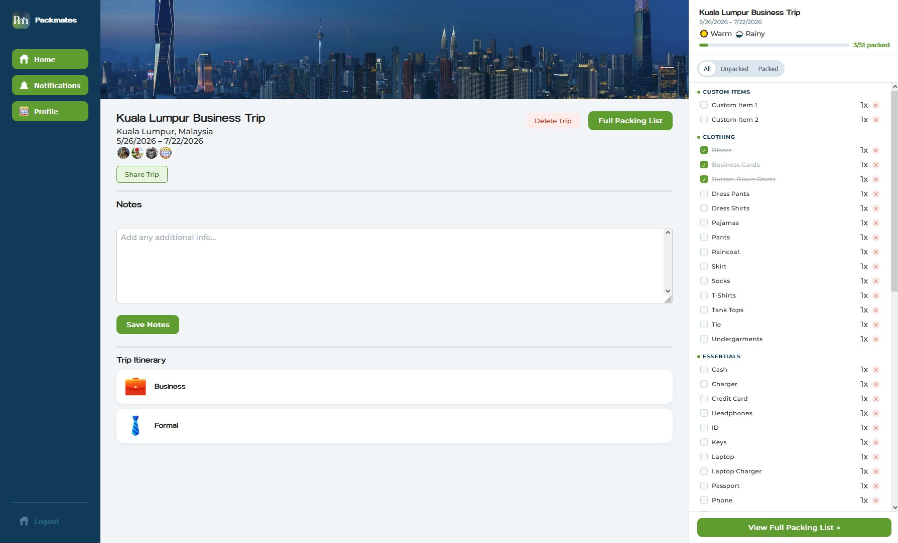
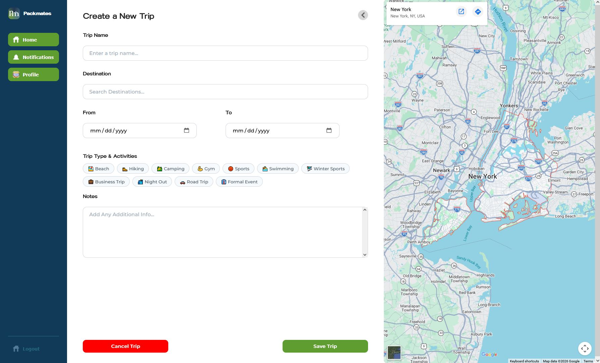
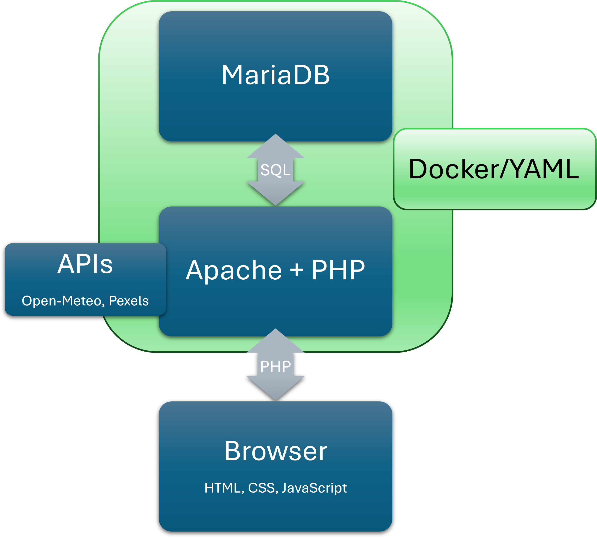
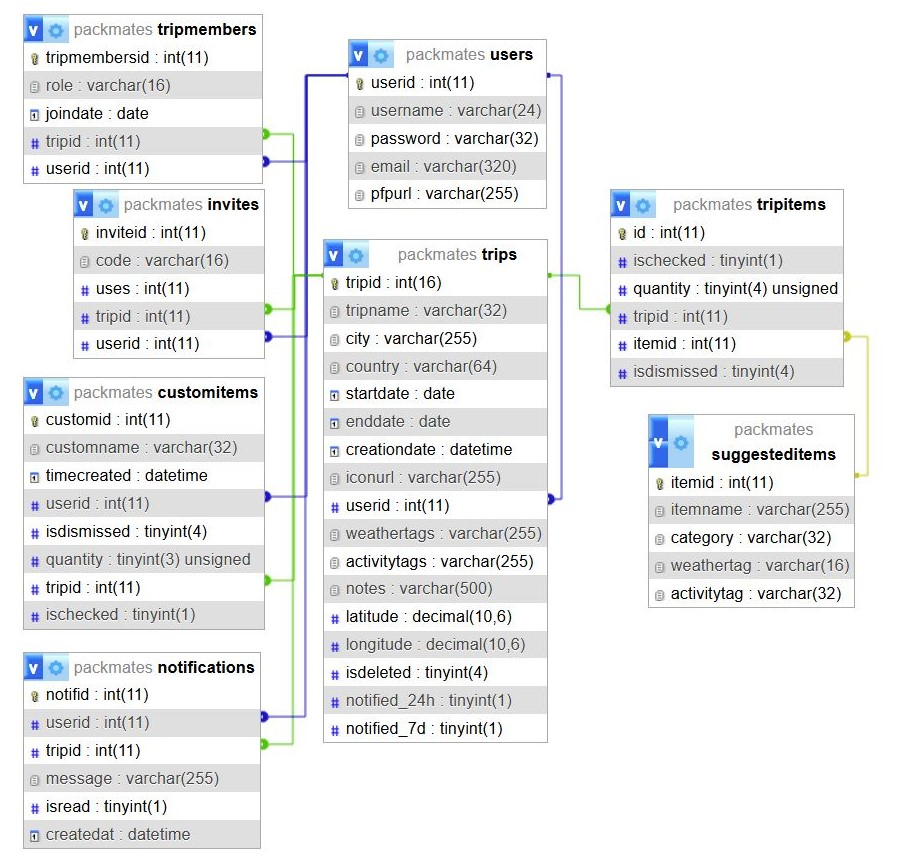
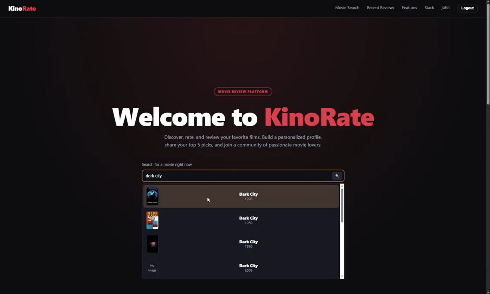
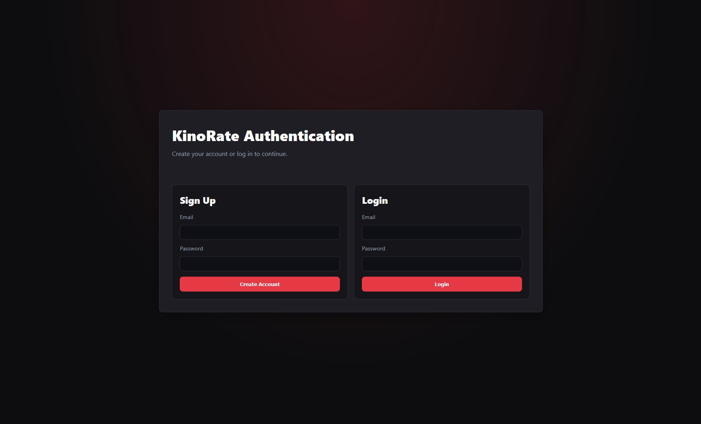
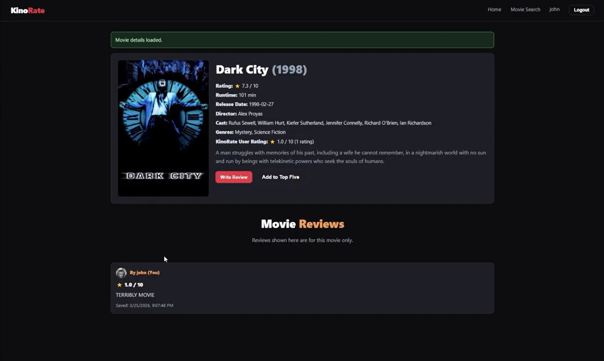
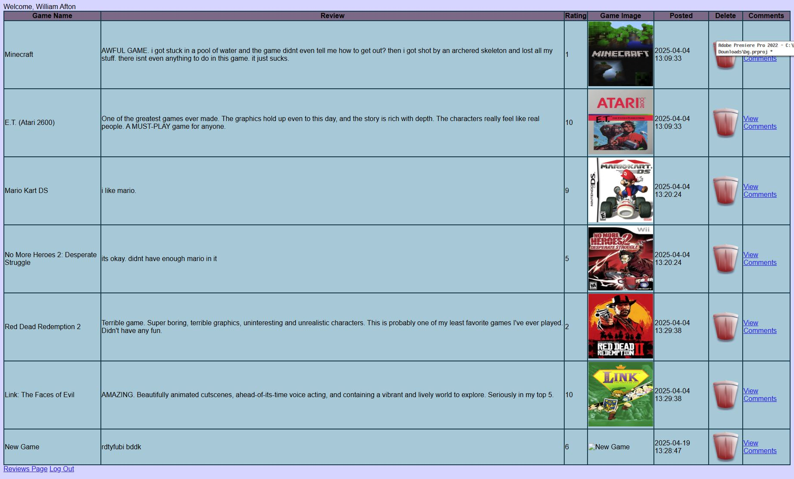
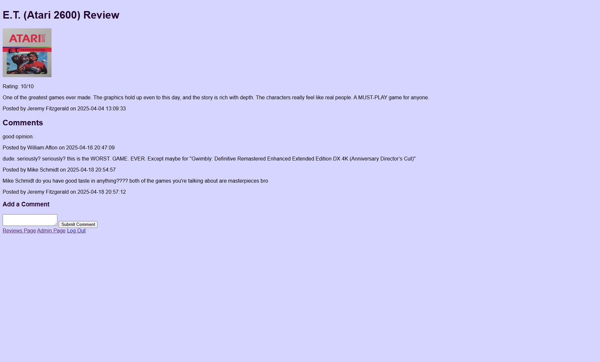

Asher Drake
Full Stack Web Developer
- JavaScript
- PHP
- LAMP Stack
- HTML and CSS
- React
Full Stack Web Developer
A travel planning app that allows users to create packing lists with suggestions based on weather
conditions. For this project I learned about how APIs work, implemented weather and image APIs, build an
SQL database, and did nearly all of the back-end code for the site, which had to be fully feature
complete. This project was made with a group of 4 others as a capstone project.
Languages used: HTML, CSS, JavaScript, PHP, and SQL





Github Repo: https://github.com/solarpanel21/packmates
Documentation: Packmates Milestone 6 pdf



A movie reviewing site prototype I created for a midterm project. The class I made this for was focused
on AI assisted development, which I normally don't use as heavily as I did on this project since the end
result is typically generic. The site worked fine though, and came out looking professional. The site
features a film search powered by TMDB API as well as social features like writing reviews, creating
lists, and having a pinned top five. The backend was done using Supabase with JavaScript as the site had
to be able to be deployed to github pages.
Languages used: HTML, CSS, JavaScript, and SQL
Github Repo: https://github.com/AsherDrake546/MidtermDIG4503C
An older project I made for a class, this unpolished game review site was one of my first real projects
with any sort of back-end. This project had no API integration but features a login system with varying
levels of privelege for viewer, reviewer, and admin. This project was good for putting fundamentals I had
learned into practice.
Languages used: HTML, CSS, JavaScript, PHP, and SQL
Github Repo: https://github.com/solarpanel21/gameReviewArchive

